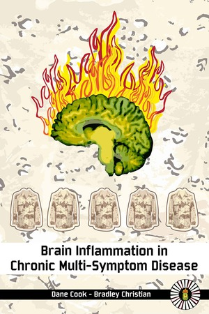

Seed Grants
Grand Challenges Seed Grants support interdisciplinary, innovative, and impactful proposals across the School of Education. Twenty faculty-led teams applied for Seed Grants, of up to $75,000 each, in one of three focus areas: education, health, and the arts. In May 2019, three awards were made in each area to grow audacious ideas.
Seed Grant Award Recipients in the Arts
-
Arts-integration for Social Emotional Learning
-
These Grand Places
-

Modeling Movement-Based Pedagogy for Parkinson Disease into Multiple Craft Disciplines
Seed Grant Award Recipients in Education
-
Urban Indigenous Arts and Sciences: Creating Educator Professional Development in an Intertribal Context
-
Tikuyendadi: Supporting Expansive Education for Children with Disabilities in Malawi
-
Our Hmoob American College Paj Ntaub
Seed Grant Award Recipients in Health
-

Brain Inflammation in Chronic Multi-Symptom Disease
-
Balance Rehabilitation via Robotic Training of Foot-Force
-
The Association Between Poverty, Executive Function, and Early Brain Development

More Seed Proposals in the Arts
-
Performance of the Gendered Voice and the Experience of Self
-
Dreams of the Abandoned Daughter: A Dance About Climate Change
More Seed Proposals in Education
-
Inclusive Reading Instruction in Multilingual International Settings
-
Early Literacy Matters: Transforming Special Education Assessments and Placements
-
Play Takes Flight: A Research-Practice Partnership
-
Nation-to-Nation for Education: A Tribal Nation/University Model
-
Wisconsin StoryBridges
More Seed Proposals in Health
-
Mobile Technology to Increase Physical Activity of Children with Autism Spectrum Disorder (ASD)
-
Promoting Persistence: A Culturally Affirming Wellness Program for Latinx College Students
-
Development of a Fidelity Measure for a Wheelchair Tai Chi Intervention
-
Implementing a Novel Intervention to Improve Cardiovascular Health

Contact us at grandchallenges@education.wisc.edu
if you would like to get in touch with any of our teams.